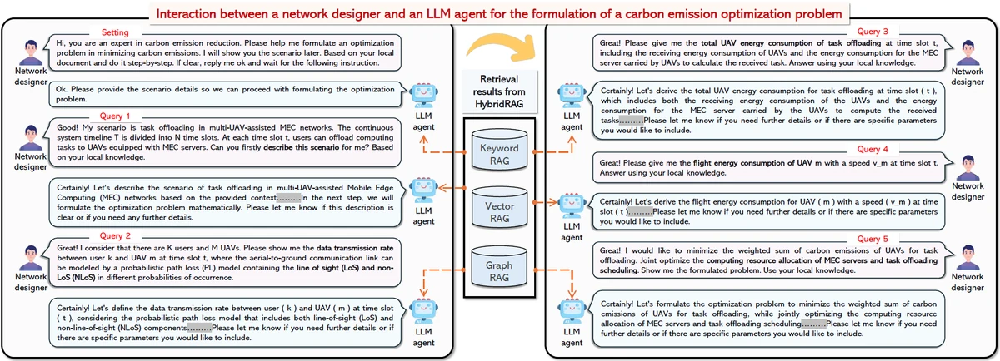
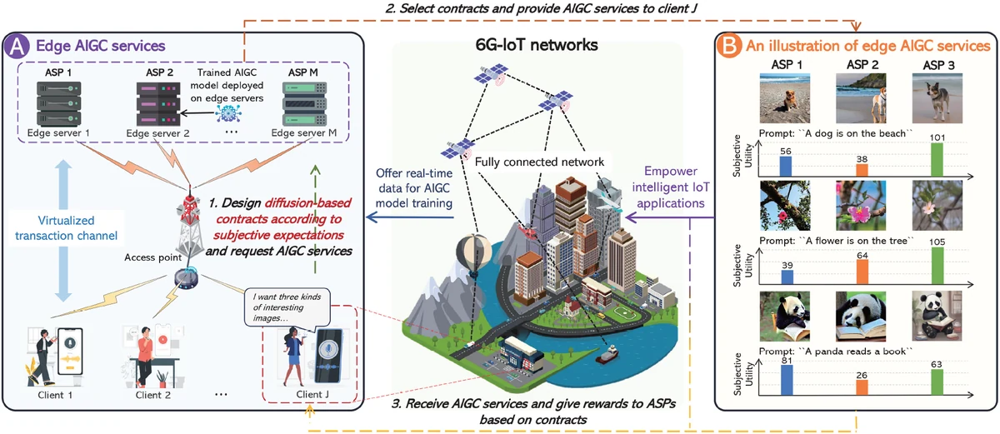
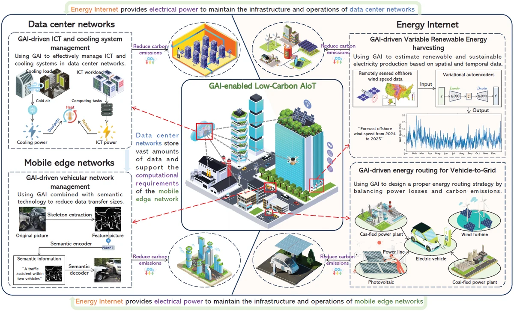

My research explores how generative AI models, optimization, and incentive mechanisms can make next-generation
wireless and networked systems more intelligent, efficient, and trustworthy. Current topics include LLM agents
for network optimization, generative AI models for mechanism design, digital-twin migration, and blockchain networking.
If you have any questions or are interested in collaborating with me, please feel free to contact me
(E-mail: jinbo1608@163.com). ^_^
01Generative AI

LLM agents, diffusion models, and RAG
02Mechanism Design

Contract theory, games, and resource incentives
03Future Networks

6G, digital twins, IoT, and blockchain systems
News
Selected for the Starship Plan （星航计划） as an Outstanding Graduate Student （卓越研究生） by the Journal of Electronics & Information Technology（《电子与信息学报》）.
Named an Outstanding Graduate of Nanjing University of Aeronautics and Astronautics.
Our work on HybridRAG-based LLM agents was published in IEEE TMC.
Our diffusion-based dynamic contract work was published in IEEE TSC.
Received the Outstanding Paper First Prize （一等奖） from the Guangdong–Hong Kong–Macao Greater Bay Area Society of Artificial Intelligence and Automation （粤港澳大湾区人工智能与自动化学会）.
Received the Outstanding Paper Second Prize （二等奖） from the Guangdong Computer Academy （广东省计算机学会）.
Received the Puxin Jingying Scholarship of Nanjing University of Aeronautics and Astronautics, awarded to only 10 students university-wide.
Named an Outstanding Graduate of Guangdong University of Technology.
Education
Sep. 2026 – Sep. 2030
City University of Hong Kong
Ph.D. in Computer Science · Hong Kong, China
Advisor: Prof. Man Hon Cheung
Sep. 2023 – Apr. 2026
Nanjing University of Aeronautics and Astronautics
M.Eng. in Computer Science and Technology · Nanjing, China
GPA: 4.09/5.0 · Advisor: Prof. Yang Zhang
Sep. 2019 – Jun. 2023
Guangdong University of Technology
B.Eng. in Data Science and Big Data Technology · Guangzhou, China
GPA: 4.21/5.0 (Top 2%) · Advisor: Prof. Jiawen Kang
Research Experience
Research Assistant
MetaXlab, Guangdong University of Technology
Advisor: Prof. Jiawen Kang
LLM agents and generative diffusion models for network optimization and incentive mechanism design.
Secure and efficient digital-twin and AI-agent migration in vehicular metaverses.
Graph learning, game theory, and optimization for block propagation in blockchain networks.
J. Kang, Jinbo Wen, D. Ye, B. Lai, T. Wu, Z. Xiong, J. Nie, D. Niyato, Y. Zhang, and S. Xie
IEEE Transactions on Cognitive Communications and Networking, 10(1):348–362
ESI Highly Cited PaperOutstanding Paper First Prize · Guangdong–Hong Kong–Macao Greater Bay Area Society of Artificial Intelligence and AutomationOutstanding Paper Second Prize · Guangdong Computer AcademyAdvisor as First AuthorScholar ↗
Starship Plan Outstanding Graduate Student （星航计划卓越研究生） — selected as one of 11 recipients by the Journal of Electronics & Information Technology（《电子与信息学报》）.
Outstanding Graduate of Nanjing University of Aeronautics and Astronautics
National Scholarship
Merit Graduate of Nanjing University of Aeronautics and Astronautics
Outstanding Paper First Prize, Guangdong–Hong Kong–Macao Greater Bay Area Society of Artificial Intelligence and Automation （粤港澳大湾区人工智能与自动化学会）
Outstanding Paper Second Prize, Guangdong Computer Academy （广东省计算机学会）
Puxin Jingying Scholarship of Nanjing University of Aeronautics and Astronautics — awarded to only 10 students university-wide.
Best Paper Award, IEEE International Conference on Distributed Computing Systems (IEEE ICDCS) Workshops 2023
Outstanding Graduate of Guangdong University of Technology
Undergraduate Thesis Innovation Award
Invited Talks
Online Talk
Generative AI-Empowered Optimization for Low-Altitude Economy Networks
Invited by the Young Scientists Association of the School of Navigation, Wuhan University of Technology, as part of its Young Scholars Academic Salon.